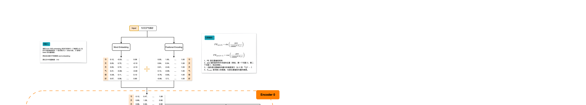
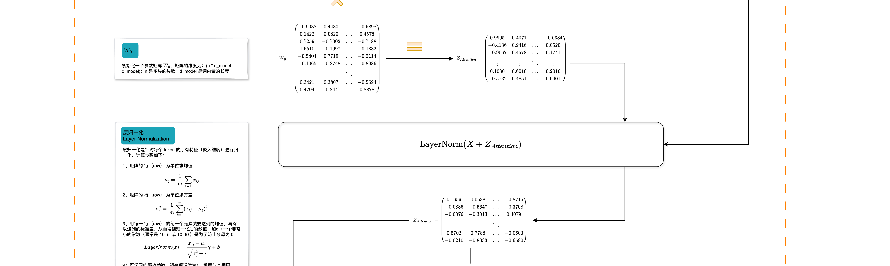
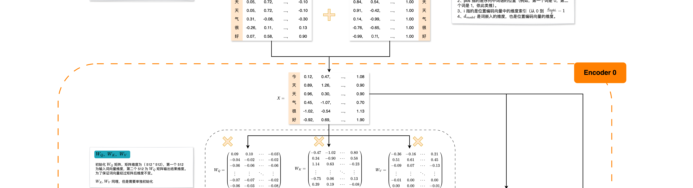
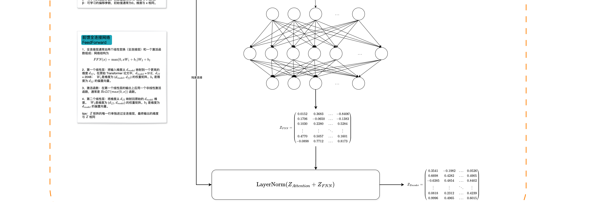
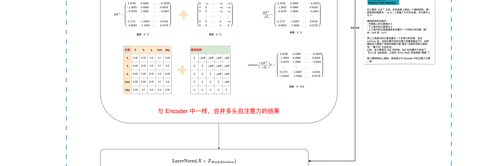
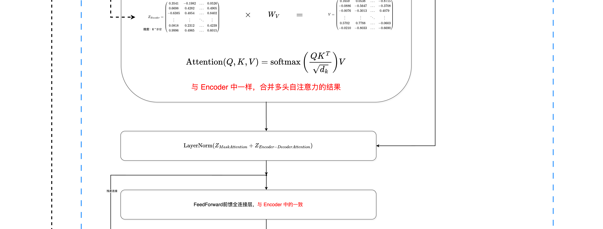
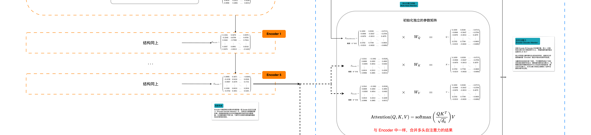
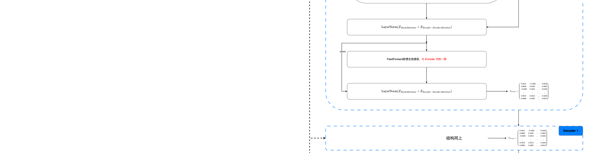

Transformer架构详解
2017 年，Google Brain 团队发表论文《Attention Is All You Need》，提出 Transformer 架构，彻底改变了 NLP 领域。
目录
- 整体架构概览
- 输入层：嵌入与位置编码
- 自注意力机制详解
- 多头注意力机制
- 前馈网络
- 编码器完整结构
- 解码器与掩码注意力
- 输出层
- 总结
1
整体架构概览
Transformer 采用经典的编码器-解码器 (Encoder-Decoder) 架构：
Encoder 整体概览

┌─────────────────────────────────────────────────────────────────────────┐
│ Transformer架构 │
├───────────────────────────────────────┬──────────────────────────────────┤
│ Encoder (左侧) │ Decoder (右侧) │
│ │ │
│ ┌─────────────────────────────────┐ │ ┌─────────────────────────────┐│
│ │ Input Embedding + Pos Enc │ │ │ Output Embedding + Pos Enc ││
│ └──────────────┬──────────────────┘ │ └──────────────┬──────────────┘│
│ ↓ │ ↓ │
│ ┌─────────────────────────────────┐ │ ┌─────────────────────────────┐│
│ │ Encoder Layer × N │ │ │ Decoder Layer × N ││
│ │ ┌───────────────────────────┐ │ │ │ ┌─────────────────────────┐ ││
│ │ │ Multi-Head Self Attention │ │ │ │ │ Masked Multi-Head Self Att│ ││
│ │ └──────────────┬────────────┘ │ │ │ └──────────────┬────────────┘ ││
│ │ ↓ Residual │ │ │ ↓ Residual ││
│ │ ┌───────────────────────────┐ │ │ │ ┌─────────────────────────┐ ││
│ │ │ Feed-Forward Network │ │ │ │ │ Cross Attention (K,V from│ ││
│ │ └──────────────┬────────────┘ │ │ │ │ Encoder Output) │ ││
│ │ ↓ Residual │ │ │ └──────────────┬────────────┘ ││
│ │ ┌───────────────────────────┐ │ │ │ ┌─────────────────────────┐ ││
│ │ │ (LayerNorm & Residual) │ │ │ │ │ Feed-Forward Network │ ││
│ │ └───────────────────────────┘ │ │ │ └──────────────┬────────────┘ ││
│ └──────────────┬──────────────────┘ │ │ (LayerNorm & Residual) │ ││
│ ↓ │ └──────────────┬──────────────┘││
│ ┌─────────────────────────────────┐ │ ↓ ││
│ │ Encoder Output (K,V for Decoder)│ │ ┌─────────────────────────────┐││
│ └─────────────────────────────────┘ │ │ Linear + Softmax Layer │││
│ │ └──────────────┬──────────────┘││
└───────────────────────────────────────┴──────────────────────────────────┘
↓
Output Probability
核心设计思想
- 完全基于注意力机制 - 抛弃了传统的 RNN/CNN 结构
- 高度可并行化 - 不再受序列长度限制
- 长程依赖捕获能力强 - 注意力机制让模型看到整个序列
2
输入层：嵌入与位置编码
2.1 Token Embedding
将离散的 token 映射到连续向量空间：
输入:
"The" "cat" "sat" "on" "the" "mat"
[1] [2] [3] [4] [1] [5]
嵌入查找表 Wₑ (Vocabulary Size × d_model):
[0.1 0.3 ...]
[0.2 0.5 ...] ← "The" 对应的向量
[0.8 0.9 ...] ← "cat" 对应的向量
...
输出:
┌─────────────────┐ ┌─────────────────┐ ┌─────────────────┐
│ 0.2 0.5 ... │ │ 0.8 0.9 ... │ │ 0.7 0.6 ... │
│ 0.3 0.1 ... │ │ 0.4 0.2 ... │ ... │ 0.9 0.3 ... │
│ ... │ │ ... │ │ ... │
└─────────────────┘ └─────────────────┘ └─────────────────┘
d_model=512维 d_model=512维 d_model=512维
2.2 Positional Encoding
为了让模型理解单词的顺序，添加位置编码：
Positional Encoding (正弦/余弦函数)
──────────────────────────────────────────
位置 0: [ sin(0/10000^0) cos(0/10000^0) sin(0/10000^2) ... ]
位置 1: [ sin(1/10000^0) cos(1/10000^0) sin(1/10000^2) ... ]
位置 2: [ sin(2/10000^0) cos(2/10000^0) sin(2/10000^2) ... ]
位置 3: [ sin(3/10000^0) cos(3/10000^0) sin(3/10000^2) ... ]
...
PE(pos,2i) = sin(pos / 10000^(2i/d_model))
PE(pos,2i+1) = cos(pos / 10000^(2i/d_model))
为什么用正弦/余弦函数？
- 可以外推到比训练时更长的序列
- 相对位置可以通过线性变换表示 (sin(a+b))
2.3 最终输入
将 Token Embedding 和 Positional Encoding 逐元素相加：
Token Embedding Positional Encoding Final Input
──────────────────── ──────────────────────── ──────────────────
[0.2 0.5 ...] + [0.0 1.0 ...] = [0.2 1.5 ...]
[0.8 0.9 ...] + [0.8 0.5 ...] = [1.6 1.4 ...]
[0.3 0.1 ...] + [-0.4 0.9 ...] = [-0.1 1.0 ...]
... ... ...
3
自注意力机制详解
3.1 QKV 概念
┌──────────────────────┐
│ Query (Q) │
│ "我要查询谁？" │
└──────────────────────┘
↑
│
┌──────────────────────┐
│ Input X │
└──────────────────────┘
│
┌───────────────┼───────────────┐
↓ ↓ ↓
┌──────────┐ ┌──────────┐ ┌──────────┐
│ Query (Q)│ │ Key (K) │ │ Value (V)│
│查询向量 │ │键向量 │ │值向量 │
└──────────┘ └──────────┘ └──────────┘
类比：搜索引擎 — Query (Q) = 用户输入的搜索关键词，Key (K) = 网页标题用于匹配，Value (V) = 网页内容实际提供信息。
3.2 QKV 的计算
通过可学习的权重矩阵线性变换：
输入 X (seq_len × d_model):
┌─────────────────────────┐
│ x₀ x₁ x₂ ... x₅₁₂│
│ x₀' x₁' x₂' ... x₅₁₂'│
│ ... │
└─────────────────────────┘
↓ × W_Q ↓ × W_K ↓ × W_V
┌─────────┐ ┌─────────┐ ┌─────────┐
│ Q │ │ K │ │ V │
└─────────┘ └─────────┘ └─────────┘
(seq_len × d_k)
3.3 注意力分数计算
步骤 1: Q 和 K 的点积 (Dot Product)
Q矩阵 K矩阵 (已转置)
┌─────────┐ ┌───────────────┐
│ q₀₀ q₀₁ │ │k₀₀ k₁₀ k₂₀ k₃₀│
│ q₁₀ q₁₁ │ × │k₀₁ k₁₁ k₂₁ k₃₁│
│ q₂₀ q₂₁ │ └───────────────┘
└─────────┘
=
┌─────────────────────────────────────────────────┐
│ q₀·k₀ q₀·k₁ q₀·k₂ q₀·k₃ │ ← 第0个位置的查询
│ q₁·k₀ q₁·k₁ q₁·k₂ q₁·k₃ │ ← 第1个位置的查询
│ q₂·k₀ q₂·k₁ q₂·k₂ q₂·k₃ │ ← 第2个位置的查询
└─────────────────────────────────────────────────┘
3.4 缩放 (Scaling)
为什么除以 √d_k ?
假设 d_k = 512
如果 Q和K 的元素是均值为0，方差为1的随机变量
那么 Q·K^T 的元素的方差为 512
太大的值会导致 softmax 的梯度消失！
所以我们除以 √d_k (√512 ≈ 22.6)
图解：Scaled Dot-Product Attention 计算流程

3.5 Mask (掩码) - 仅解码器需要
防止看到未来的词！
掩码矩阵 M (下三角矩阵):
┌─────────────────────────────┐
│ 1 0 0 0 │ 第0个词只能看自己
│ 1 1 0 0 │ 第1个词能看 0 和 1
│ 1 1 1 0 │ 第2个词能看 0, 1, 2
│ 1 1 1 1 │ 第3个词能看全部
└─────────────────────────────┘
3.6 Softmax 转换为权重
Softmax 函数将分数转换为概率分布 (0到1，总和为1):
应用 Softmax:
┌─────────────────────────────────────────┐
│ 1.00 0.00 0.00 0.00 │ ← 位置0：只看自己
│ 0.10 0.90 0.00 0.00 │ ← 位置1：主要看位置1
│ 0.05 0.55 0.40 0.00 │ ← 位置2：看位置1和2
│ 0.10 0.15 0.25 0.50 │ ← 位置3：看所有，但位置3最重要
└─────────────────────────────────────────┘
3.7 加权求和得到输出
用注意力权重乘以 Value 矩阵：
输出矩阵 (seq_len × d_k):
┌─────────────────────────────────────────┐
│ v₀ │ ← 100% v₀
│ 0.1v₀ + 0.9v₁ │ ← 10% v₀，90% v₁
│ 0.05v₀ + 0.55v₁ + 0.4v₂ │
│ ... │
└─────────────────────────────────────────┘
3.8 完整公式
Attention(Q, K, V) = softmax(QK^T / √d_k) V
4
多头注意力机制
4.1 为什么要多头？
让模型同时关注不同类型的关系！
比如翻译句子 "The cat sits on the mat":
头 1: 关注主谓一致 ("cat" ↔ "sits")
头 2: 关注动词-介词搭配 ("sits" ↔ "on")
头 3: 关注指代关系 ("mat" ↔ "the")
头 4: 关注长程依赖 ("The" ↔ "mat")
...
不同的头可以学习不同类型的注意力模式！
4.2 多头注意力结构
输入:
┌───────────────────┐
│ X │
└──────────┬────────┘
↓
┌───────────────────────────────┐
│ Linear (Q) Linear (K) Linear (V)│ ← 3个独立的线性层
└──────────┬────────┬──────────┘
↓ ↓ ↓
┌─────────┐ ┌─────────┐ ┌─────────┐
│ Q │ │ K │ │ V │
└─────────┘ └─────────┘ └─────────┘
↓ ↓ ↓
┌─────────────────────────────────┐
│ Split into h heads │ ← 例如 h=8
└────┬────────────────────┬───────┘
↓ ↓
┌─────────────────────────────────┐
│ Head 0 Head 1 ... Head 7 │
│ [scaled dot product] ... │
└─────────────────────────────────┘
↓ ↓
┌─────────────────────────────────┐
│ Concatenate all heads │
└─────────────────────────────────┘
↓
┌─────────────────┐
│ Linear layer │
└─────────────────┘
↓
┌─────────────────┐
│ Output │
└─────────────────┘
4.3 数学表示
对于每个头 i (0 <= i < h):
Q_i = Q * W_Q[:, (i*d_k) : (i+1)*d_k]
K_i = K * W_K[:, (i*d_k) : (i+1)*d_k]
V_i = V * W_V[:, (i*d_k) : (i+1)*d_k]
每个头独立计算注意力:
Head_i = Attention(Q_i, K_i, V_i)
拼接所有头:
MultiHead = Concat(Head_0, Head_1, ..., Head_{h-1})
最后线性投影:
Output = MultiHead * W_O
5
前馈网络
5.1 网络结构
输入 (d_model 维)
│
↓
┌──────────────────────┐
│ Linear Layer 1 │ ── 维度: d_model → d_ff
│ (W₁, b₁) │ 例如: 512 → 2048
└──────────┬───────────┘
↓
┌──────────────────────┐
│ ReLU Activation │ ── max(0, x)
└──────────┬───────────┘
↓
┌──────────────────────┐
│ Linear Layer 2 │ ── 维度: d_ff → d_model
│ (W₂, b₂) │ 例如: 2048 → 512
└──────────┬───────────┘
↓
输出
5.2 数学公式
FFN(x) = max(0, x * W₁ + b₁) * W₂ + b₂
或者更简洁的写法:
FFN(x) = ReLU(xW₁ + b₁) W₂ + b₂
5.3 为什么是这样的结构？
- 先扩展到高维 (d_ff = 4*d_model): 给模型更多的表达空间
- 再压缩回去: 提取最有用的信息
- 每个位置独立处理: 不像注意力那样混合不同位置的信息
6
编码器完整结构
图解：Encoder 输入层与位置编码

图解：Multi-Head Attention 多头合并

6.1 编码器层
输入 x
│
├──────────────────────────────────────┐
↓ │
┌──────────────────────────┐ │
│ Multi-Head Self-Attention│ │
└──────────┬───────────────┘ │
↓ │
┌──────────────────────────┐ │
│ Dropout │ │
└──────────┬───────────────┘ │
↓ │
┌──────────────────────────┐ │
│ Add & LayerNorm │ ← x + dropout│
└──────────┬───────────────┘ │
↓ │
┌──────────────────────────┐ │
│ Feed-Forward Network │ │
└──────────┬───────────────┘ │
↓ │
┌──────────────────────────┐ │
│ Dropout │ │
└──────────┬───────────────┘ │
↓ │
┌──────────────────────────┐ │
│ Add & LayerNorm │ ← + dropout │
└──────────┬───────────────┘ │
↓ │
输出 ←──────────────────────────────┘
6.2 残差连接和层归一化
残差连接解决了深度网络中梯度消失的问题，直接"抄近路"过去！
Output = LayerNorm(x + SubLayer(x))
LayerNorm (层归一化):
均值 μ = (x₀ + x₁ + ... + x_{d-1}) / d
方差 σ² = Σ(x_i - μ)² / d
LayerNorm(x) = γ * (x - μ)/√(σ² + ε) + β
其中:
γ: 缩放参数 (可学习)
β: 偏移参数 (可学习)
ε: 小常数 (防止除以0)
作用：将激活归一化到均值为0，方差为1的分布，加速训练
6.3 N层堆叠
完整编码器由 N 个相同的编码器层堆叠而成！
论文中 N=6:
Encoder Layer 0
↓
Encoder Layer 1
↓
...
↓
Encoder Layer 5 (第6层，索引从0开始)
↓
Encoder Output (作为 K 和 V 给解码器)
7
解码器与掩码注意力
图解：Masked Multi-Head Attention

图解：Cross-Attention 机制

7.1 解码器层
输入 x (已生成的部分)
│
├──────────────────────────────────┐
↓ │
┌──────────────────────────┐ │
│ Masked Multi-Head Self-Attn│ ← 掩码 │
└──────────┬───────────────┘ │
↓ │
┌──────────────────────────┐ │
│ Dropout + Add & LayerNorm│ │
└──────────┬───────────────┘ │
↓ │
┌──────────────────────────────┐ │
│ Encoder-Decoder Attention │ │
└──────────┬────────────────────┘ │
↓ │
┌──────────────────────────┐ │
│ Dropout + Add & LayerNorm│ │
└──────────┬───────────────┘ │
↓ │
┌──────────────────────────┐ │
│ Feed-Forward Network │ │
└──────────┬───────────────┘ │
↓ │
┌──────────────────────────┐ │
│ Dropout + Add & LayerNorm│ │
└──────────┬───────────────┘ │
↓ │
输出
7.2 编码器-解码器注意力
在翻译任务中，解码器需要关注编码器的输出！
来源:
Q: 来自解码器 (Decoder Input)
K, V: 来自编码器 (Encoder Output)
这样解码器可以看到整个输入序列！
8
输出层
8.1 Linear + Softmax
Decoder 输出
│
↓
┌─────────────────────────┐
│ Linear Layer │
│ W_out: d_model × vocab_size │
└──────────┬───────────────┘
↓
┌─────────────────────────┐
│ Softmax │
└──────────┬───────────────┘
↓
┌───────────────────┐
│ Vocab Size 维 │
│ 概率分布 │
│ (总和为1) │
└───────────────────┘
↓
Sampling (采样) - 生成下一个词
8.2 权重共享技巧
输出层的线性层权重 W_out 和输入层的嵌入矩阵 W_e 可以共享，减少参数量：
logits = decoder_output * W_e^T
8.3 采样策略
给定概率分布，如何选择下一个词？
1. Greedy Search (贪心)
- 每次选概率最大的词
2. Beam Search (集束搜索)
- 保留 top-k 个候选，最后选最优
3. Sampling (采样)
- Top-k: 从概率最高的 k 个词中采样
- Top-p: 从累计概率达到 p 的最小词集中采样
- 温度参数 Temperature: T < 1 更确定，T > 1 更多样
9
总结
Transformer 核心组件回顾
1. 输入处理
- Token Embedding: 单词 → 向量
- Positional Encoding: 添加位置信息
2. 自注意力
- Q/K/V: 查询/键/值
- Scaled Dot-Product: 缩放点积
- Softmax: 转为概率
- Weighted Sum: 加权求和
3. 多头注意力
- 分成多个头，并行计算
- 学习不同类型的注意力
4. 前馈网络
- 升维 → 激活 → 降维
5. 残差连接与层归一化
- x + Sublayer(x)
- LayerNorm
6. 编码器-解码器
- 编码器: N 层堆叠
- 解码器: N 层堆叠，包含编码器-解码器注意力
完整架构图解
Encoder + Add & Norm + FFN

Decoder 整体概览与 Cross-Attention

原论文超参数
| 参数 |
值 |
说明 |
| d_model | 512 | 模型维度 |
| h (heads) | 8 | 注意力头数 |
| d_k = d_v | 64 | 每个头的维度 (512/8) |
| d_ff | 2048 | FFN中间维度 |
| N (layers) | 6 | 编码器/解码器层数 |
| dropout | 0.1 | Dropout率 |
Transformer 的优势
3. 可扩展
参数量可以缩放 (GPT-3, PaLM, ...)
4. 灵活
不仅限于文本，也可用于图像、音频等领域
恭喜你现在已经完全理解了 Transformer 架构！
接下来可以看一些经典论文：Attention Is All You Need (2017) · BERT (2018) · GPT 系列 (2018-2020)